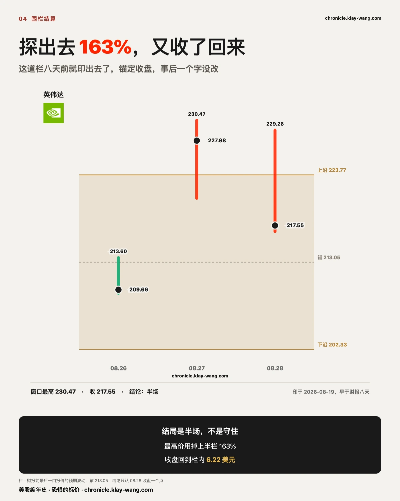
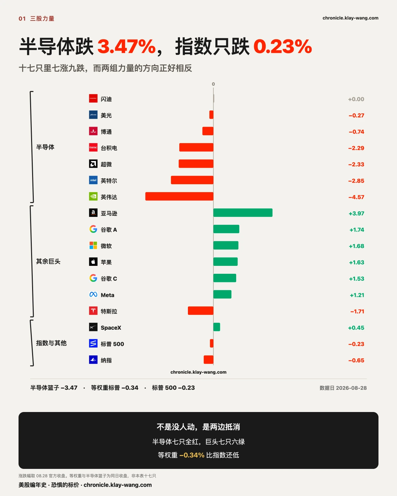
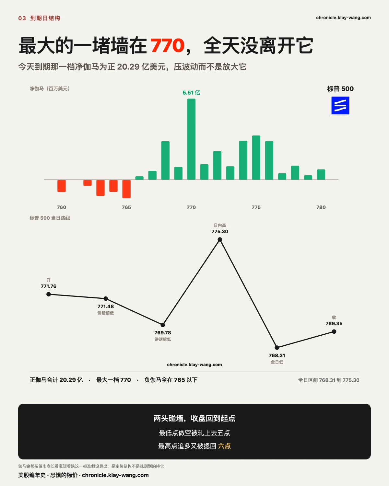
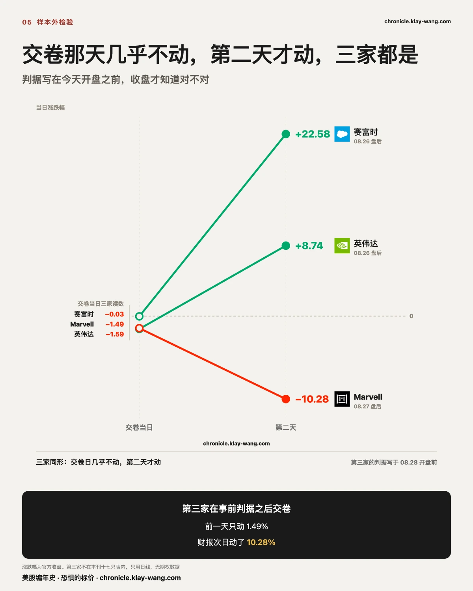
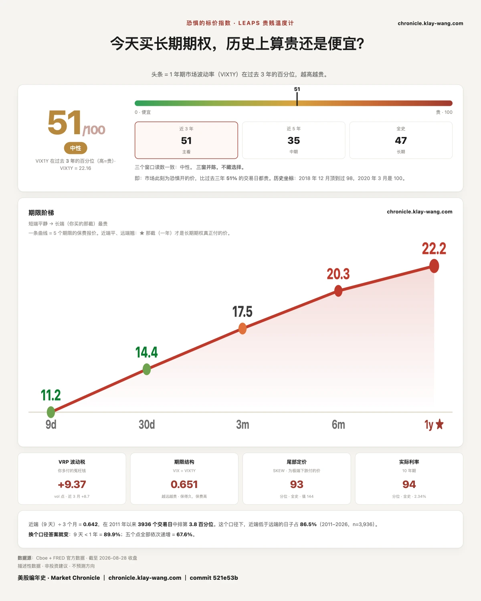

昨天押今天上涨的四亿六千万，今晚归零 · 8.24-8.28
三行速览
- 在涨完之后进场的钱，今晚一分不剩。 昨天为今天到期的英伟达看涨付了 6.652 亿，
按今收 217.55 结算，行权价在收盘之上的 4.621 亿全部归零；而同一到期的看跌只有 0.776 亿，96.8% 在价内。 - 指数只跌 0.23%，不代表你的账户只跌 0.23%。 高波动那一篮子今天跌 5% 到 10%，
而且白天段的跌幅是跳空段的两到三倍。指数里这些票的权重很小，你手上未必。 - 这一周新闻最吵的财政信用叙事，今天在价格上是反的。 黄金跌 3.24%、比特币现货 ETF 跌 3.06%、
长债 ETF 只跌 0.30%。被定价的不是财政会不会出问题，是他会不会再收紧。
一 · 英伟达这一天：短端赔光，长端没动，围栏收回
今天所有值得说的事都长在同一只票上，所以这一节把它拆到底。
昨天押今天的那笔钱，七成归零
昨天收盘那一轮，英伟达押今天到期的看涨合计 6.652 亿。今天收 217.55，一档一档结：
行权价高于 217.55 的，归零，4.621 亿，占 69.5%。
行权价低于 217.55 的，仍在价内，2.031 亿，占 30.5%。
归零的大头全挨着现价：225 那档 1.245 亿、220 那档 1.048 亿、230 那档 0.903 亿、
227.5 那档 0.663 亿、222.5 那档 0.552 亿。最贵的一档 230 昨天成交 65.4 万张，每张 1.38 美元。
同一到期的看跌昨天只有 0.776 亿，其中 96.8% 今天在价内。
昨天看涨对看跌是 8.6 比 1，结果小的那一边几乎全赢，大的那一边七成归零。
这笔钱是昨天涨完 8.74% 之后才进场的，押的是今天接着涨。

它是怎么跌的：白天段占了 4.31，跳空只占 0.27
英伟达今天跌 4.57%，其中跳空只有 0.27%，白天段 4.31%。
不是夜里被砸的，是开盘之后一整天卖出来的。成交额 196.4 亿，全场最高。
它自己的预期波动是上下 8.25，今天实走 9.14，用掉 110.8%，冲出了自己的区间。
而同一天标普 500 只用掉 52.4%。宏观没动，动的是它。
今天买的是什么：五成九压在当天就到期的合约上
短打表 A 级七十七笔，英伟达一只占 51.6%。看跌对看涨按金额从昨天的 0.11 翻到 4.82。
翻转不是有人一夜改了主意。今天那 7.291 亿里 59% 压在当日到期那一档，昨天那一档一分钱没有。
成交数据分不出买卖，到期日附近的成交量对持仓量倍数也不构成判据。
价格走到 220 到 227.5 那一带，合约就在那一带被交易。这是结果，不是原因。
昨天那笔明年一月的仓，今天没动
昨天新开的 2027 年 1 月 200 行权价看涨 18.85 万张，今晨持仓 27.32 万张。
今天这一档成交 2.25 万张，只有持仓的百分之八。
短端赔光的同一天，长端一张都没走。 这两笔钱不是同一批人，也不在赌同一件事。
长端非但没加价，还降了价
英伟达的一年期波动率：08.25 是 40.48，财报当天 40.39，财报次日 39.73，今天 39.94。
财报次日短端权利金冲到 11.302 亿全场第一，而一年期同一天掉了 0.66。
短端为已经发生的事付了四点六倍的钱，长端一分没加，还便宜了。
围栏定案：半场
栏 202.33 到 223.77，锚 213.05，印在八月十九日那期，比财报早八天。
昨天最高 230.47 用掉上半边栏的 163%，收在栏外 4.21 美元。
今天最高 229.26、最低 216.81、收 217.55，回到栏内 6.22 美元。
三态里的半场：探出去又收了回来。 守住是从头到尾没出过栏，这一道出过两次，
两者不是同一个结局，不合并计数。

二 · 指数没事，是因为指数里没有你手上那些票
标普 500 今天只跌 0.23%，等权重跌 0.34%，市值加权反而好 0.11 个百分点。
半导体那一篮子跌 3.47%，五只巨头一起涨（亚马逊 3.97 领头，Meta 1.21 垫底），
两边刚好抵消。
抵消到零之后，价格本可以随便飘。它没有。今天到期那一档净伽马正 20.29 亿美元，
最大一堵墙在 770 有 5.51 亿，负伽马全在 765 以下。
盘面开 771.76、探 768.31、拉 775.30、收 769.35。
在最低点做空的被轧七个点，在最高点追多的被摁回近六个点，两个方向都没拿到东西。
伽马金额按做市商长看涨、短看跌这个标准假设算出，是定价结构，不是观测到的持仓。
但这是指数的故事，不是你账户的故事。 我们那张三十五只的跳空表里，高波动那一组是这样收的：
- MARA 全天跌 10.11%，跳空段只跌 2.86%，白天段跌 7.46%
- IonQ 全天跌 7.68%，跳空段跌 1.72%，白天段跌 6.06%
- 微策略全天跌 7.34%，跳空段跌 2.47%，白天段跌 4.99%
- Arm 全天跌 6.33%，跳空段跌 1.61%，白天段跌 4.80%
- Coinbase 全天跌 6.33%，跳空段跌 2.46%，白天段跌 3.97%
- Robinhood 全天跌 5.01%，跳空段跌 1.01%，白天段跌 4.04%
六只票，白天段的跌幅普遍是跳空段的两到三倍，和英伟达同型。
而同表的金融参照组几乎没动：摩根大通涨 0.96%，万事达涨 0.60%，维萨涨 0.51%。
今天被卖的是高波动、高贝塔那一篮子，而且是白天一路卖出来的。
指数里它们权重很小，你的账户里未必。


三 · 这一周新闻最吵的那件事，今天在价格上是反的
这一周财经版面最响的叙事是财政信用：三十年期收益率一度到 5.34%，
财政部把长债回购规模扩大，市场开始讨论央行独立性；
八月黄金涨了一成七，被解释成从利率交易切换到货币贬值交易。
如果这个叙事今天成立，该涨的是黄金和比特币，该跌的是长债。
今天黄金 ETF 跌 3.24%，比特币现货 ETF 跌 3.06%，二十年期以上国债 ETF 跌 0.30%。
三个全跟叙事反着来，或者干脆没动。黄金还跌得比比特币多。
原因就在今天上午。美联储主席沃什在杰克逊霍尔做任内第一次重大演讲，
说通胀没有出现有意义的放缓，必须确信它在朝目标走且够快，否则央行还有工作要做；
最鹰的一句是他说目前金融状况并不具有限制性，而利率是履行职责的主要工具。
那句话直接对着实际利率。实际利率往上，黄金和不生息资产就是对手盘。
它们今天一起跌，是在为同一句话付钱。今天被定价的不是财政会不会出问题，是他会不会再收紧。
同一时刻还落了两个数：八月密歇根消费者信心终值 51.7（预期 51、前值 51）；
非农就业基准修正初值负 7.9 万（预期正 18.3 万、前值负 86.2 万）。
市场的答复是走了个来回，收在 769.35，比昨天低 0.23%。
全天只用掉事前隐含波动的 52.4%。先信了鹰，又不信了，最后当没听见。
四 · 我们八月十九日说那是一亿一千五百万的下注，这句话错了
八月十九日那期印过：微软 08.28 到期的九档看涨是当日最集中的一组下注，
一个日期、一个方向、约 1.15 亿美元。那不是下注，是股息套利。
微软的除息日是八月二十日，每股 0.91 美元，而那批单成交在八月十九日下午两点三十七分，
正好是除息前一天；八档行权价 390 到 435 全部深度价内，当时微软在 483 一线；
八档时间戳同为两点三十七分，是一笔不是九笔；持仓随后归零，
今天早上 390 那档剩 20 张、415 那档剩 9 张、435 那档剩 26 张。
原判据写的是若成交量掉回持仓量以下则收回。持仓直接消失，比判据要求的还彻底。
错在看见深度价内加巨量加同一到期日就读成方向性下注，没有先问除息日在哪一天。
价内看涨在除息前一天集中放量是套利的固定形状。今天正是这批合约的到期日，账在今天结清。
旧稿不回改，勘误自己先说，带日期。
五 · 还有两笔账，判据都不是事后挑的
Marvell 那条判据是今天开盘之前写下的。 英伟达和赛富时都是周三盘后交卷、周四才动；
Marvell 周四盘后交卷，按同一形状该在今天动，判据是全天涨跌幅明显大于昨天那 1.49%。
今天它跌 10.28%，是昨天的六点九倍，成交量 4894 万也是昨天的两倍半。 判据满足。
PayPal 那笔收购正式告吹。 Advent 与 Stripe 的财团退出，报价每股 60.50 美元、
总额约 530 亿，被董事会以估值不足拒绝。今天它跌 12.70%，盘中最低 52.62。
530 亿只是它 2021 年峰值约 3600 亿的零头。
董事会嫌低的那个价，市场用一天时间说它本来就高了。

六 · 这对你手里的票意味着什么
不给操作建议，只把今天的价格换算成你能自己判断的东西。
手里有英伟达的：它今天跌 4.57%，昨天涨 8.74%，两天合起来还剩 3.79%。
你要判断的不是它下周涨不涨，是昨天那批把行权价从 160 抬到 200 的钱，今天有没有改主意。
今天那一档成交 2.25 万张，而持仓是 27.32 万张，成交只有持仓的百分之八，基本没动。
真正的答案要等下周一早上的结算持仓，今天看不出来。
手里有半导体的：今天这一篮子跌 3.47%，而 Marvell 一只跌了 10.28%。
这不是同一件事。 Marvell 跌是因为它昨晚交了卷，其余那些跌是因为钱被搬去了别处。
分开看，别把一只票的财报当成整个板块的判决。
手里有那五只巨头的：它们今天替指数扛了英伟达那一截。
要注意的是，扛得动是因为它们同时涨，不是因为哪一只特别强。
亚马逊 3.97% 已经是最高的，五只里最低的 Meta 只有 1.21%。
这种同时上涨很难连着出现，下周若只剩两三只在涨，指数就扛不住了。
什么都没拿在等进场点的：今天提供了一个可复用的观察，
就是在到期日，价格更容易被结构按住，而不是被消息推动。
美联储主席讲了全场最鹰的一句，市场走了个来回回到原地，全天只用掉事前隐含的一半。
这是观察，不是建议，而且它只在有大量到期持仓的日子成立。
七 · 今天值得带走的三句话
- 涨完之后才进场的钱，赔得最干净。 昨天押今天到期的看涨 6.652 亿，其中 4.621 亿今晚归零；
而同一到期的看跌只有 0.776 亿，却有 96.8% 在价内。大的那一边错，小的那一边对。 - 指数说的不是你账户说的。 指数只跌 0.23%，而高波动那一篮子跌 5% 到 10%，白天段是跳空段的两三倍。
- 黄金和比特币今天一起跌，是在为同一句话付钱。 主席说金融状况并不具有限制性，
而这一周被喊得最响的财政信用叙事，今天在价格上是反的。
八 · 预告与下一期回访
下面每条都写死了判据和唯一来源，下一期照着量。
英伟达明年一月 200 那一档会不会改主意。 今晨持仓 27.32 万张，今天成交只有 2.25 万张。
昨晚出过一条消息：英伟达暂停了一项七月推出的、以信用支持换云收入分成的安排，
原因是公司内部有人担心招致反垄断审查。买明年一月的人，是在这条消息之前买的。
判据：下周一早上那一档持仓若继续增厚，说明这条消息不改变他们的看法；若回落，昨天那笔的解释要重写。
只引长天期异常表与次日晨读持仓。该消息的金额规模未核到一手出处，本刊不出现任何金额。
五只巨头能不能连着一起涨。 今天亚马逊 3.97% 到 Meta 1.21%，五只同时为正。
判据：下周首个交易日若只剩两只或更少为正，而半导体仍在跌，则指数应当明确走低；
若指数仍然不动，则今天的抵消要重新解释。只引各票当日涨跌幅。
博通两条腿继续分开盯。 本周近月从 50.12 抬到 50.85，一年期从 47.67 掉到 47.15，
倒挂 2.45 走宽到 3.70，走宽的 1.25 里近月占五成八。
判据不变：若在标的不跌的日子里一年期回到 48 以上，撤走风险溢价这个读法作废；
若一年期继续下行而近月不再抬，则改成长端单边定价。只引恒定期限表 15:45 那一枪。
下周整周都是就业。 09.01 职位空缺与制造业采购经理人、09.02 民间就业、
09.03 企业计划裁员与初请失业金与非制造业采购经理人、09.04 非农就业。
判据：下周五非农之后，若一年期波动率读数在标的不跌的日子里仍不上行，
则市场认为就业数据不改变反应函数；若一年期开始上行，则本周远端不买单只是因为题目还没到。
只引站上温度计逐日台账与恒定期限表 15:45 那一枪。
另记一件下周之后的事：09.18 是集体换档日，那一天到期的持仓会大规模移仓，
届时所有跨到期日的比较都要重新对尺，不能拿换档前后的数直接比大小。
九 · 恐惧的标价：一周退了十二个半点，而绝对值只动了 0.53

恐惧的标价指数（Fear-Price Index）· 2026-08-28 · 读数 51/100：一年期波动率 VIX1Y 为 22.16，
处于近三年第 51 百分位，高即贵。逐日台账与口径 → chronicle.klay-wang.com · 转载注明：恐惧的标价指数 · Market Chronicle
本周这个读数是这样走的：周一 63.4、周二 60.6、周三 56.3、周四 52.5、周五 50.9。
五个交易日，一天没停过。
而绝对值只从 22.69 走到 22.16，动了 0.53。 两个数都要列出来，
因为百分位会放大绝对值的移动：只说读数退了十二个半点，读者会以为发生了很大的事。
真正值得记的是它退的时候，这一周装着什么。财报、通胀数据、美联储主席任内第一次重大演讲、
以及一次把过去就业往下修的基准修正。四件本该让保险涨价的事，撞在同一周，而它一路在降价。
期权异动与逐票数据 → chronicle.klay-wang.com/options
温度计读数与两个台账 → chronicle.klay-wang.com
这两页每个交易日收盘后自动更新，页上带日期，改不了也补不回去。
本站不提供投资建议，不预测方向，不做择时。